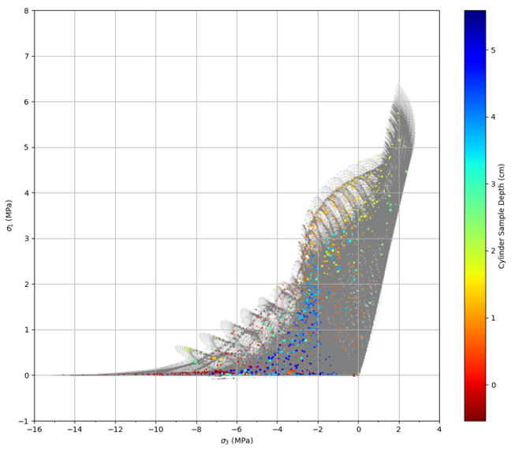
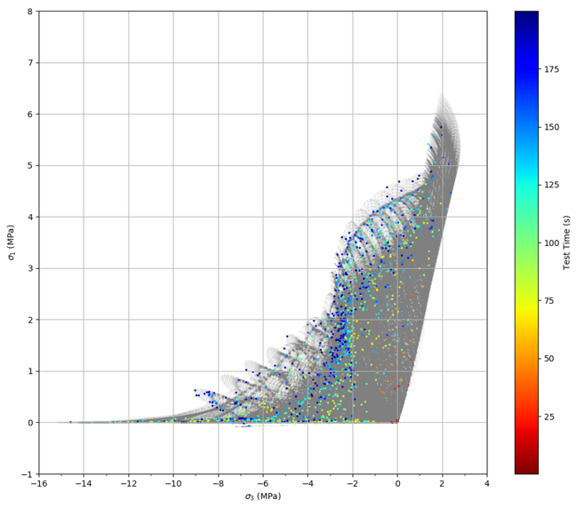

The animation below shows a contour plot of temperature through the radius and depth of the cylinder while it is being cooled. The black dots show the location of the acoustic events and the size corresponds to the magnitude of the event. It can be observed that the lead of the acoustic events seems to follow the middle of the light orange band (i.e 0 to 10 ºC). This shows a correlation between the acoustic events, the temperature front, and thermal stress. Additionally, more acoustic events appear as lower temperature fronts progress through the depth of the sample.
The animation below shows the distribution of acoustic events in the maximum (σ1) vs minimum (σ3) principal stress space. The size of the red dots corresponds to the magnitude of the acoustic event. CLICK [+] TO INCREASE THE SPEED OF THE ANIMATION.
The images below, show all possible combinations of maximum and minimum principal stresses experienced by the sample in the test up to 200s as the shaded grey area. The darker the shading of grey, the more frequently the stress combination occured. The colored points show the stress combination at the location of acoustic events through the whole sample up to 200s in the test time. The color of the points indicates the contour of 3a) the depth of the acoustic events and 3b) the time in the test when the acoustic event occured. Figure 3a confirms our suspicions of the groupings of acoustic events. Figure 3b shows that after 75s of the test time the acoustic events appear at combinations of increasing minimum and maximum principal stress. This shows that the number of acoustic events increases with the increase in principal stresses. Unfortunately a clear path from position in the possible stress combinations through time does not appear, but it is interesting to see how the much of the acoustic events where the maximum principal stress is close to zero occurs between 75s and 125s. This might suggest that the acoustic events could be filtered to observe only the events when the maximum princpal stress is close to zero for a failure criterion.
a)  b) 
The animation below shows the distribution of temperature at the location of acoustic events up to 200s of the test and only in the top half of the sample to only observe the acoustic events created from thermal stress instead of mechanical stress, which occurs in the bottom of the sample. It is interesting to see how the acoustic events appear through time as the temperature at the location of the events decreases. As the temperature of the sample continues to decrease, the number of acoustic events in places where the sample is at a higher temperature continues to increase also. This shows a definite correlation between thermal stress and acoustic events. CLICK [+] TO INCREASE THE SPEED OF THE ANIMATION.
The animation below shows the distribution of minimum principal stress at the location of acoustic events up to 200s of the test and only in the top half of the sample to only observe the acoustic events created from thermal stress instead of mechanical stress, which occurs in the bottom of the sample. The animation below shows that at the start of the test, the acoustic events appear at all of the possible minimum principal stress states approximately equally. However at 120 s, acoustic events appear rapidly at values between -3 MPa and 0 MPa. There is also a rise in acoustic events at a minimum principal stress of -7 MPa that starts at the same time. It is likely that there is a way to correlate the stress conditions in the sample where the minimum principal stress is between -3 MPa and 0 MPa to the number of acoustic events and rate of acoustic events. Establishing a relationship between the thermal stress and appearance of acoustic events is essential to predict in-situ stress from acoustic events. Unfortunately, a relationship between thermal stress and acoustic events is not obvious at this point. CLICK [+] TO INCREASE THE SPEED OF THE ANIMATION.